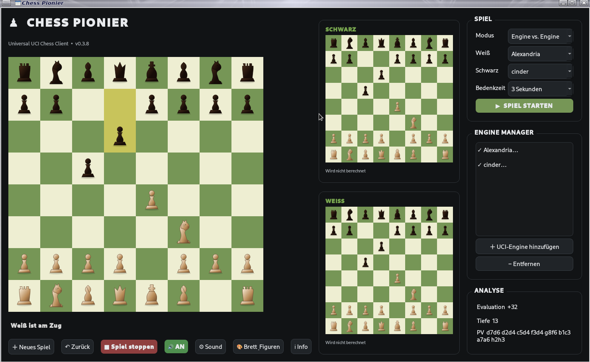

Über Chess Pionier
Chess Pionier ist ein universaler UCI-Schachclient mit grafischer Oberfläche. Die Anwendung verbindet ein Schachbrett mit der Verwaltung und Verwendung von UCI-Schachengines.
Die aktuelle Version 0.3.16 bietet PGN-Laden und -Speichern, ein Analysefenster, verschiedene Brett- und Figurendarstellungen sowie konfigurierbare Soundeinstellungen.
Funktionen
- Universaler UCI-Schachclient
- Verwaltung und Konfiguration von UCI-Schachengines
- PGN-Dateien laden und speichern
- Analysefenster
- Verschiedene Brett- und Figurendesigns
- Deutsch- und englischsprachige Oberfläche
- Soundeinstellungen und Soundwiedergabe
- Persönliche Einstellungen für Sprache, Brettdarstellung und Sound
Installation & Start
Die einfachste Installation. Die benötigten Debian-Laufzeitpakete werden über die Paketabhängigkeiten automatisch mitinstalliert.
Nach der Installation kann Chess Pionier über das Anwendungsmenü oder mit folgendem Befehl gestartet werden:
Unter Debian 13 die Systempakete installieren und anschließend das Programm im Projektordner starten:
Alternative: virtuelle Python-Umgebung
Die Python-Abhängigkeiten können alternativ in einer eigenen virtuellen Umgebung installiert werden. Dabei wird python-chess über requirements.txt installiert:
Abhängigkeiten
- PySide6 (QtWidgets und QtSvg): grafische Oberfläche
- python-chess: Schachregeln, Brettstellung, PGN und UCI-Engine-Schnittstelle (manuelle pip-Installation; keine DEB-Abhängigkeit)
- pygame / pygame-ce: Soundwiedergabe über SDL2
Bei der DEB-Installation werden die Debian-Pakete python3-pyside6.qtwidgets, python3-pyside6.qtsvg und python3-pygame automatisch als Abhängigkeiten installiert. python-chess ist keine DEB-Abhängigkeit und muss nach der Installation manuell eingerichtet werden: python3 -m pip install --user python-chess. Die sieben WAV-Sounddateien werden mit der Anwendung installiert.
Speicherorte unter Linux
- Einstellungen (Sprache, Brettdarstellung, Sound):
~/.config/chess-pionier/settings.ini - Gespeicherte Schach-Engines:
~/.config/chess-pionier/engines.json - Benutzerspezifische Daten:
~/.local/share/chess-pionier/
Vorhandene data/settings.ini und engines.json aus dem bisherigen Programmordner werden übernommen, wenn am neuen Speicherort noch keine entsprechenden Dateien vorhanden sind. Die alten Dateien werden dabei nicht gelöscht. PGN-Dateien werden am im Speichern-Dialog ausgewählten Ort abgelegt.
Aktuelle Version
Chess Pionier 0.3.16
GitHub-Repository öffnen README anzeigen